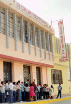

|
|
Nuestra Institución
 Historia de la CMAC Sullana
La Caja Municipal de Ahorro y Crédito de
Sullana, es una institución financiera que inició sus operaciones un 19 de
Diciembre de 1986, con la autorización que le otorga la resolución de la
Superintendencia de Banca y Seguros Nº 679 86. La CMAC Sullana goza de
autonomía económica, financiera y administrativa, que son la base de su
éxito como entidad financiera.
En Diciembre de 1986 inicia sus
operaciones ofreciendo el servicio de Crédito Prendario. En diciembre de
1987, obtuvo la autorización para la captación de recursos en moneda
nacional, mediante las modalidades de Ahorro Corriente, Depósitos a Plazo
Fijo y el Plan Progresivo de Depósito (PPD). En Junio de 1989 se convierte
en la segunda Caja Municipal de¡ sistema que obtiene mediante oficio S.B.S.
NI 2104, la autorización provisional para el otorgamiento de créditos no
prendarios, bajo la modalidaci de crédito a la Pequeña Empresa, dirigido a
pequeños y microempresarios de la Provincia de Sullana. La autorización
definitiva se obtuvo en junio de 1993, mediante Resolución S.B.S. NI 192
93.
En Diciembre de 1990, pone al servicio
del público un nuevo producto: El Ahorro con Retiro por Ordenes de Pago,
el mismo que fue diseñado para facilitar las operaciones comerciales de
nuestros clientes, puesto que hoy su aceptación es reconocida en las
diferentes Instituciones Financieras de la provincia, así como en
cualquier punto de¡ país donde opere una Caja Municipal del Sistema
A partir de Octubre de 1991, la CMAC
Sullana ofrece su producto de Créditos Personales, mediante las siguientes
modalidades:
- Crédito Descuento por Planilla
- Crédito Libre Amortización
- Créditos a Profesionales
Independientes
- Créditos con garantía de Plazo fijo
y/o CT.S
En 1992, la CMAC Sullana, con el apoyo
de¡ Convenio Perú Alemania realizó un estudio de la situación Agrícola
Económica de la Provincia de Sullana, con la finalidad de determinar la
factibilidad de otorgar créditos al sector agrícola, as¡ como la
metodología a emplear para este tipo de crédito; considerando que la
Provincia de Sullana es una zona eminentemente agrícola. En Marzo de 1993
se otorgaron los primeros créditos agrícolas, servicio que se encuentra en
constante evolución y con resultados satisfactorios hasta la fecha,
En Mayo de 1993, se autoriza mediante
oficio S.B.S. NI 2020 la realización de operaciones en moneda extranjera,
tanto para el otorgamiento de créditos como para la captación de recursos
y operaciones de Compra y Venta, permitiendo la captación de un segmento
de¡ Mercado Financiero Local.
Actualmente para poder intermediar a un
número cada vez más creciente de microempresarios dedicados a actividades
comerciales y agropecuarias en Sullana,Talara y Tumbes, la CMAC Sullana,
recibe el apoyo financiero de Instituciones de créditos como el Banco
Interamericano de Desarrollo, Corporación Financiera de Desarrollo,
FONCODES y la Banca Nacional en un monto total de US$ S'367,449 dólares,
que conjuntamente con los recursos cle sus ahorristas y recursos propios
han apoyado entre los años 1989 1998, l16,218 créditos microempresariales
por un monto total de 51. 190'592,697 aprox. US$ 78'908,721 dólares,
evidenciándose la importancia de la CMAC Sullana dentro de¡ Mercado Local.
Es importante resaltar que durante los
últimos cinco años el Sector agrícola de los valles de¡ Chira, San
Lorenzo, Medio Piura y Ayabaca se han visto beneficiados con créditos de
la caja Municipal de Sullana por un monto acumulado que asciende a más de
US$ 16'831,953. Durante 1998 el sector agrícola ha recibido 3,122 créditos
por un monto de SI, 10'535,830 que son aproximadamente. US$ 3'643,571.
En la agencia Talara desde su puesta en
funcionamiento en Julio de 1994, se han atendido más de 25,253 solicitudes
de crédito para microempresarios por un monto otorgado superior a los US$
13'383,046 dólares, contribuyendo así al desarrollo económico y
empresarial de esta provincia.
En Julio de 1996 se puso en
funcionamiento una nueva agencia en la ciudad de Tumbes, la cual hasta la
fecha ha atendido a más de 10,995 solicitudes de crédito por un monto
otorgado superiora los US$ W160,485 dólares.
En el año 1997, la CMAC Sullana logro
interconectar sus agencias de Sullana, además la campaña cle ahorros ha
logrado consolidarse, gracias a la gran aceptación que ha tenido por parte
de nuestros ahorristas de Sullana, Talara yTumbes, ello basado en la
confianza y solidez que demuestra la Caja. Asimismo el apoyo recibido por
el BID y COFIDE al Sistema de Cajas Municipales dentro de las cuales se
encuentra la de Sullana con financiamiento a largo plazo; el mismo que
permitió intermediar un mayor número de recursos para la atención a la
Micro y Pequeña Empresa urbana y agrícola de la región (Sullana, Talara y
Tumbes), contribuyendo así al desarrollo social y económico de la
población de menores recursos.
Durante 1998, la Cmac Sullana recibió por
parte de la SBS, la resolución SBS 27498 correspondiente a su conversión a
Socieclad Anónima. Siguió incentivando el Ahorro a Plazo Fijo con sorteos.
Se presentaron dos estudios de Factibilidad para la apertura de dos nuevas
agencias en las ciudades de Barranca y Huaura Huacho, los cuales fueron
aprobados por la SBS, dándonos la autorización correspondiente para
aperturar las dos agencias con resoluciones SBS 1208 98 para la Agencia de
Huaura Huacho y SBS 1209 98 la cual autoriza la instalación de la agencia
Barranca. En este año se ha venido realizando los avances en la
instalación de¡ programa SIAFC (Sistema Integrado de Administración
Financiera y Contable), habiendo culminado la etapa de la unificación de
clientes de los diferentes productos que brinda la CMAC Sullana. Se han
realizado las pruebas respectivas y se tiene proyectado para 1999 la
instalación de¡ SIAFC (Sistema Integrado de Administración Financiera y
Contable) en todas las agencias de la Cmac Sullana con el objetivo de
tener un sistema integrado en la parte operativa de nuestros productos que
permitan brinclar una mejor información y atención a nuestros clientes y
así estar a la vanguardia con la tecnología de punta.
Para 1999, en el mes de enero se dio
inicio a las operaciones de las agencias de Barranca y Huaura Huacho.
Además se empezará a instalar el SIAFC en las agencias, luego de haber
realizado las pruebas correspondientes. Asimismo se tiene planificado la
construcción de¡ local institucional de la CMAC SULLANAy la adquisición
de¡ local para la Agencia Talara, con ello mejorará indudablemente la
atención de nuestros clientes, posibilitando la elevación o incremento de¡
número de captaciones, as¡ como un mejor servicio a nuestros clientes de
pequeña empresa tanto urbanos como agrícolas.
El año 2000 significó para la Caja un año
de retos, se termino de instalar el sistema informático SAFC que permitió
pasar sin problemas el cambio de¡ milemo conocido COMO Y2K (PIA2000),
luego se desarrollaron los trabajos para poder implementar el Nuevo Manual
de Contabilidad establecido por la SBS y además se inauguró el local
institucional en la ciudad de Talara.
El año 2001 fue un año muy productivo
para la Caja, lo que se reflejó principalmente en el nivel de rentabilidad
de 41% que se obtuvo, alcanzando una utilidad neta después de impuestos de
51.4 5 Millones. Durante el año 2001 la Caja desarrolló un programa de
reestructuración y recomposición de su estructura orgánica, con la
finalidad de tener procesos más eficientes y poder desarrollar más
productos para beneficio de nuestros clientes, es as¡ que se agregan las
Jefaturas de Crédito, Organización y Métodos, Seguridad, el Area de
Recuperaciones, los Asistentes de Administración, los Auxiliares
Contables, que han permitido poder tener un crecimiento mucho más
eficiente en términos de gestión empresarial, Dentro de las actividades
que se desarrollaron se puede mencionar los trabajos preliminares para la
construcción del Local Institucional en la ciudad de Sullana, as¡ como la
presentación ante la SBS de los proyectos para la apertura de Oficinas
Especiales en las ciudades de Ayabaca y Aguas Verdes.
|